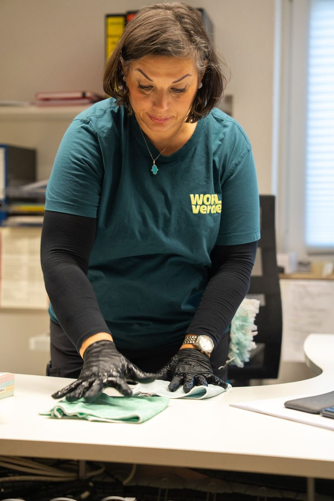

Sauberkeit, auf die Sie bauen können.
Planbare Unterhaltsreinigung für Bürogebäude, Industrieobjekte, Wohnanlagen und kommunale Einrichtungen. Mit festen Teams, klaren Zuständigkeiten und dokumentierten Abläufen.

Kurz gesagt: WOHLverde übernimmt die Gebäudereinigung für Bürogebäude, Industrieobjekte, Wohnanlagen und kommunale Einrichtungen im Raum Bruchsal und Karlsruhe: Unterhalts- und Büroreinigung, Treppenhausreinigung, Glas- und Fensterreinigung, Grund- und Teppichreinigung. Immer mit eigenem, geschultem Personal.
Drinnen glänzt es.
Ein sauberer Arbeitsplatz trägt zu Gesundheit und Zufriedenheit bei. Wir reinigen gründlich, diskret und so, dass Ihr Betrieb ungestört weiterläuft.
Unterhalts- und Büroreinigung
Regelmäßige Reinigung von Büros, Sozialräumen und Sanitärbereichen nach festem Plan.
Treppenhausreinigung
Für Wohnanlagen und Geschäftshäuser, zuverlässig im vereinbarten Rhythmus.
Glas- und Fensterreinigung
Fenster, Glasflächen, Wintergärten, Terrassen- und Lamellendächer streifenfrei sauber.
Grundreinigung
Intensive Reinigung bei Bedarf, zum Beispiel nach Umbauten oder vor Übergaben.
Teppichreinigung
Professionelle Reinigung textiler Bodenbeläge.
Industriereinigung
Reinigung von Produktions- und Industrieflächen nach Ihren Anforderungen.

Gleiches Team, gleiche Qualität. Jedes Mal.
Unsere Reinigungskräfte sind bei uns festangestellt und regelmäßig geschult. Sie wissen, wer bei Ihnen arbeitet, und wir sorgen dafür, dass der Standard stimmt.
- Festangestellt und geschult
- Deutschsprachige Ansprechpartner
- Reinigungsplan nach Ihrem Bedarf
- Umweltschonende Reinigungsmittel
So starten wir gemeinsam.
Vom ersten Kontakt bis zur laufenden Betreuung mit festen Zuständigkeiten.
Unverbindliche Anfrage
Sie rufen an oder nutzen das Formular. Wir melden uns zeitnah und stimmen einen ersten Termin ab.
Persönliches Gespräch
Wir analysieren Ihre Anforderungen, Abläufe und die Besonderheiten Ihrer Immobilie.
Termin und Angebot
Vor-Ort-Termin mit Objektaufnahme. Danach erhalten Sie ein transparent kalkuliertes Angebot.
Zuverlässige Betreuung
Nach Ihrer Freigabe starten wir mit festem Team, klaren Prozessen und definierten Zuständigkeiten.
Welche Reinigungsleistungen bietet WOHLverde?
Unterhalts- und Büroreinigung, Treppenhausreinigung, Glas- und Fensterreinigung, Grundreinigung, Teppichreinigung und Industriereinigung.
Wie oft sollte ein Büro gereinigt werden?
Das hängt von Nutzung und Anforderungen ab. Üblich ist eine tägliche oder wöchentliche Reinigung. Wir erstellen einen Reinigungsplan, der zu Ihrem Betrieb passt.
Kann ich einen individuellen Reinigungsplan vereinbaren?
Ja. Wir bieten flexible Reinigungspläne, abgestimmt auf Ihre Zeiten und Abläufe.
Welche Reinigungsmittel verwendet WOHLverde?
Wir setzen auf umweltschonende und nachhaltige Reinigungsmittel, die wirksam und zugleich schonend sind.
Weitere Leistungen
Ihr Objekt verdient einen Partner, der mitdenkt.
Erzählen Sie uns kurz, worum es geht. Wir melden uns in der Regel innerhalb eines Werktags und vereinbaren einen Vor-Ort-Termin.